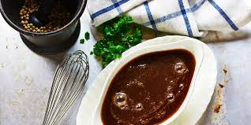
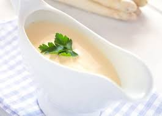
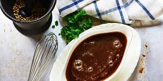
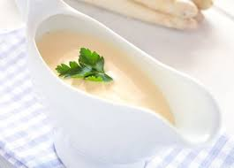

Veloute
Velouté (pronounced "vuh-loo-TAY") is one of the five mother sauces of classical French cuisine—béchamel, espagnole, hollandaise, and tomato are the other four. This means velouté is a starting point from which a number of sauces can be made. It's sort of like a blank coloring book that you can color in any way you choose. This doesn't mean that a velouté isn't delicious in itself, but that its flavor will be enhanced and amplified by adding other ingredients. Knowing how to make a good velouté is key to saucing endless dishes. Our easy recipe will give you the keys to expand and experiment with this base sauce, and find which herbs, finishing touches, or additions you like best. From velouté, you can obtain Allemande sauce finished with eggs and cream, and the famous suprême sauce, finished with cream, butter, and lemon juice. Many other creamy sauces come from velouté, and they have varied additions: herbs, wine, shallots, or meat drippings, like gravy. Like béchamel, velouté is considered a white sauce, and both are thickened with roux, a mixture of butter and flour. Whereas béchamel has milk as its base, velouté is made with stock. Since there are three types of white stock—chicken, veal, and fish—there are likewise three types of velouté, but chicken is the most common. Velouté is commonly served alongside chicken or fish; the fish velouté is equally flavorful, and obviously made with fish stock, whereas veal velouté is made with veal stock.
Ingredients
3 1/2 cups chicken stock
1 ounce clarified butter (about 2 tablespoons)
1 ounce all-purpose flour (about 3 tablespoons)
Steps to Make It
HIDE IMAGES
Gather the ingredients.
DIRECTIONS
Bring the chicken stock to a simmer in a medium saucepan. Lower the heat to keep the stock hot.
Simmer chicken stock
In a separate heavy-bottomed saucepan, melt the clarified butter over medium heat until it becomes frothy. Take care not to let it turn brown, as velouté must be off-white in color. Browning the butter will yield a darker sauce.
Melt butter in saucepan until frothy
With a wooden spoon, stir the flour into the melted butter a little bit at a time, until it is fully incorporated. The resulting pale yellow-colored paste is called a roux.
Stir in flour to butter to make roux
Heat the roux for another few minutes or so, until it has turned a light blond color. This helps cook off the raw flour flavor. Don't let the mixture turn brown for the same reason the clarified butter needed to be kept light in color: The sauce must be pale.
Heat roux until it's a light color
Using a wire whisk, slowly add 3 cups of the hot chicken stock to the roux, whisking vigorously to make sure it's free of lumps. Keep whisking while adding the stock. Reserve the remaining 1/2 cup of stock in case you need to thin out the sauce.
Slowly add chicken stock to roux and Simmer, reducing the heat if needed, for about 30 minutes or until the total volume has reduced by about one-half, stirring frequently to make sure the sauce doesn't scorch at the bottom of the pan or form lumps while cooking. Use a ladle to skim off any solids or impurities that might rise to the surface.
The sauce should be smooth and velvety. If it's too thick, whisk in a bit more of the remaining hot stock until it's just thick enough to coat the back of a spoon. This technique involves that the sauce has adequate viscosity to coat the back of the utensil without running off it.
Once you can coat the back of a spoon, remove the sauce from the heat. For an extra smooth consistency, carefully pour the sauce through a wire mesh strainer lined with a piece of cheesecloth.